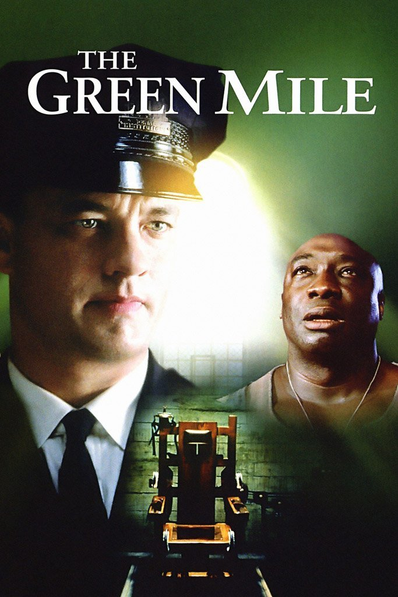

|  |
Yeşil YolOldukça iri bir adam olan John Coffey, iki küçük kızı tecavüz ederek öldürmek suçundan idama mahkûm olmuştur. Ürkütücü görünümünün aksine oldukça ince ve karmaşık bir iç dünyası olan John Coffey, bazı doğaüstü güçlere sahiptir. İdam cezası alan mahkûmların bulunduğu hapishanenin infaz odası baş gardiyanı olan Paul Edgecomb'un ona gerçekten suçlu olup olmadığını sorması ile birlikte ikisinin arasında bir diyalog başlar. |